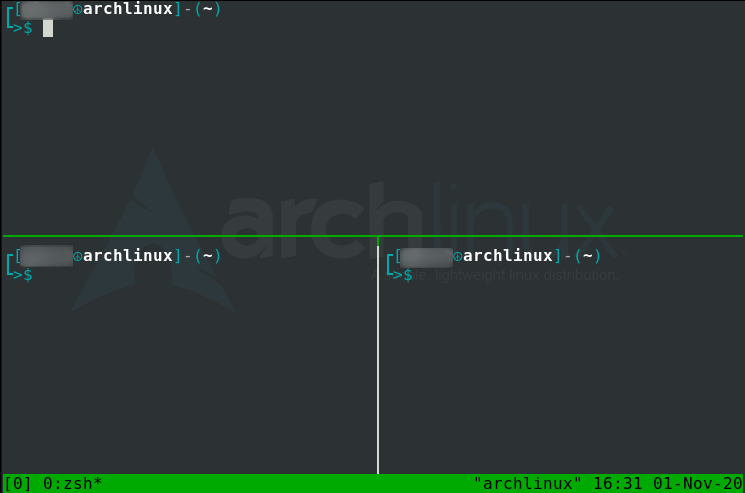

$ sudo apt-get install tmux
$ sudo pacman -S tmux
$ tmux
$ tmux new -s [session-name]
| Command | Description |
|---|---|
tmux ls |
List all tmux sessions. |
ctrl b shift $ |
Change the current tmux session name. |
ctrl b d |
Dettach a tmux session. |
tmux a -t [session-name] |
Reattach a tmux session. |
ctrl b s |
Switch between 2 or more tmux sessions. |
ctrl b shift : |
Get into tmux prompt. |
tmux kill-session -t [session-name] |
Kill a tmux session. |
tmux kill-session -t [session-name-in-use] -a |
Kill all tmux sessions except the one currently in use. |
exit |
Exit currently selected tmux session. |
| Command | Description |
|---|---|
ctrl b shift " |
List all tmux sessions. |
ctrl b shift % |
Split pane horizontally. |
ctrl b spacebar |
Cycle/toggle between tmux layouts. |
ctrl b [arrow-key] |
Move between 2 frequently used panes. |
ctrl b ; |
Move to different panes. |
ctrl b shift } |
Move the currently selected pane clockwise. |
ctrl b shift { |
Move the currently selected pane counter-clockwise. |
ctrl b q |
Check pane number. |
ctrl b z |
Enlarge a particular pane, if that pane is to small to view the results. |
ctrl b x |
Kill pane. |
| Command | Description |
|---|---|
swap-pane -s [pane-number] -t [pane-number] |
List all tmux sessions. |
swap-pane -t [pane-number] -s [pane-number] |
Change the current tmux session name. |
join-pane -s [window-name] |
Dettach a tmux session. |
join-pane -t [window-name |
Reattach a tmux session. |
(note: adding -v or -h joins horizontally or vertically respectively for join-pane.)
| Command | Description |
|---|---|
ctrl b c |
Create a new empty tmux window. |
ctrl b , |
Change the currently selected window name. |
ctrl b shift ! |
Move the currently selected pane to it's own tmux window. |
ctrl b p |
Move back to previous tmux window. |
ctrl b n |
Move up to next tmux window. |
ctrl b w |
View and cycle between all tmux windows. |
ctrl b shift & |
Kill or completely close a tmux window. |
| Command | Description |
|---|---|
ctrl b [ |
Start copy mode. (note: always start copy mode before using below key-bindings.) |
ctrl r |
Search/grep up the wall of terminal text. |
ctrl s |
Search/grep down the wall of terminal text. |
ctrl spacebar |
Enable text highlighting to select text for copying. |
alt w |
Enable text highlighting to select text for copying. |
ctrl b ] |
Paste from tmux clipboard to a terminal text editor. |
ctrl b shift # |
Double check what is copied to the tmux clipboard. |
q (or) esc |
Exit out of copy mode. |